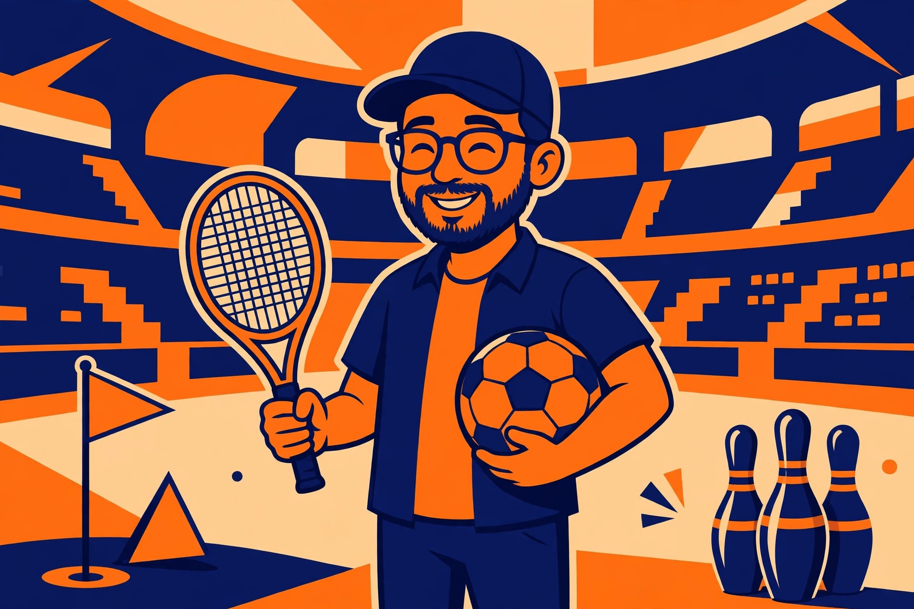

Sports dad jokes for game day and the sidelines

Sports give dad jokes a home-field advantage. Every game already runs on wordplay — bases, nets, clubs, saves, love that scores zero — so the pun is halfway told before anyone opens their mouth. Merriam-Webster defines a dad joke as a wholesome joke of the type said to be told by fathers, with a punchline that is often an obvious or predictable pun or play on words. Sports vocabulary is full of exactly that: ordinary words doing a second job inside the rules of a game. This collection is organized by sport, so the right joke can be found in the time it takes a commercial break to end.
The sincere part: a well-timed sports joke is encouragement in disguise. On a youth sideline it lowers the temperature after a missed play; at a watch party it gives everyone — including the one guest who does not follow the team — a way into the conversation.
Why sports wordplay lands with every age
Writing for the British Psychological Society, humour researcher Marc Hye-Knudsen defines dad jokes as puns that violate only a linguistic norm and nothing else. A pun deliberately says two different things at the same time, breaking the ordinary assumption that words carry one clear meaning at a time. Sports supercharge that mechanism because so many of their terms are borrowed everyday words: a base is a safe place and a starting point, a club is a group and a stick, a save is rescue and thrift. A child who knows the everyday meaning gets the joke's shape immediately, and the sporting meaning arrives as the pleasant surprise. Collections elsewhere frame the same material as game-day messages and sideline groans; radio station 1075 The Fan, introducing its own sports list, notes that the lighthearted, deliberately cringy quality is exactly what makes these jokes a hit with families and kids.
The sections below run from the sports most kids meet first — baseball in the backyard, soccer at school — toward the ones with richer adult vocabulary, like golf and hockey. The format comparison and the occasion framework after the jokes turn the list into a playbook.
Baseball jokes
- Glove's love language? Catching feelings.
- Pitcher's apology after a wild throw? That one slipped — no curve intended.
- Foul ball's excuse? I was just out of line.
- Catcher's New Year's resolution? To handle everything thrown at him.
- Team's pre-snack ritual? The seventh-inning stretch — toward the snack table.
- Home plate's advice to a nervous runner? Slide into the weekend safely.
- Rookie trust his first swing? It was base instinct.
- Bat go to bed early? It wanted a good swing at tomorrow.
- Umpire at the family dinner? He called the plate full and fair.
Football and soccer jokes
- Goalie open a savings account? He was already great at saving.
- Penalty kick describe the moment? A lot of pressure, but right on the spot.
- Striker's promise to the team? I am aiming to please — mostly the top corner.
- Midfielder's compliment to a friend? You really know how to pass the time.
- Trophy's acceptance speech? I could not have been lifted without you.
- Corner flag's job review? I stand my ground and mark my spot.
- Punt returner's motto? Catch first, celebrate second.
- Extra time's complaint? Nobody plans for it, yet it always shows up.
- Cleats at the school dance? They were studs at standing out.
Basketball and tennis jokes
- Tennis ball's diary entry? I keep getting served — then I bounce back.
- Racket apologize to the ball? Sorry, I was a little highly strung.
- Tennis romance movie? Love was in every scene and still scored zero.
- Hoop feel popular on game night? Everyone was taking a shot at getting close.
- Free throw's pep talk to itself? No pressure. Just the line, the ball, and a breath.
- Point guard give directions? Stay low, look up, and pass early.
- Backboard describe its job? People aim high because of me.
- Dunk get a recipe review? Delicious, but it needed more hang time.
The tennis romance joke deserves a note, because it confuses first-time listeners in the best way: in tennis scoring, the word love means zero — a quirk the big sports lists lean on heavily, including LaughlyFun's sports section. Explain that one fact after the punchline and the joke can be retold by the listener forever.
Golf, bowling, and hockey jokes
- Golfer order at the sandwich shop? A club, of course.
- Golf tee's motto? Lift others so they can take their best shot.
- Weather app for golfers? It only showed fore-casts.
- Bowling pins start a support group? They kept falling down and being set up again.
- Bowling ball stay so calm? It knew how to roll with it.
- Hockey puck at the party? It slid right in.
- Zamboni review its own job? Smooth work, cool conditions.
- Hockey goalie's house rule? Nothing gets past the door without asking.
Running and swimming jokes
- Marathoner's favourite kind of story? A long one, paced well.
- Starting block's pep talk? Push off like you mean it.
- Relay baton's one worry? It only relaxes when the handoff is clean.
- Stopwatch's complaint? Everyone keeps pressing its buttons.
- Hurdler's life advice? Obstacles are just part of the route.
- Finish line's quiet pride? It waits for everyone, fast or slow.
- Swim goggles fog up before the race? They just needed a clearer outlook.
- Diver's review of the new pool? It really made a splash.
Joke formats compared
The same sport can supply very different joke shapes, and the shape decides where the joke works. This comparison table is built from the jokes in this article.
| Format | How it works | Example from this page | Best for |
|---|---|---|---|
| Equipment personified | A ball, glove, or puck gets a human mood or motive | The foul ball that was just out of line | Young kids; works even mid-game |
| Vocabulary double duty | A sporting term is read in its everyday sense | The goalie who was great at saving | Mixed-age groups; one-line setup |
| Scoring quirk | The joke depends on an odd rule or scoring word | Tennis love that scores zero | Fans who know the sport; needs one fact explained for newcomers |
| Motto or pep talk | A player or object delivers a tiny motivational speech with a pun inside | The golf tee that lifts others | Cards, signs, and pre-game encouragement |
Notice the trade-off the table exposes: the funnier a joke is to a devoted fan, the more likely it depends on a scoring quirk a newcomer does not know yet. For mixed company, vocabulary double duty is the safe starter — the everyday meaning carries the laugh even when the sporting meaning is new.
Picking the right sports joke for the occasion
Run this decision framework before the joke leaves the bench. Three questions, in order:
- Who is listening? Fans of the sport get scoring-quirk jokes. Newcomers and young kids get equipment-personified jokes about the sport being played that day — the ball and the glove need no rulebook.
- Where is the joke being told? At a watch party, vocabulary double-duty jokes travel across the room and survive crowd noise. On a youth sideline, motto and pep-talk jokes only — the joke should lift a player, never single one out. On a card or a handmade sign, the shortest format wins, because it must be readable at a glance.
- What just happened in the game? After a mistake, reach for an encouragement joke about equipment, never about a player. After a great play, a scoring-quirk joke rewards the fans who saw it coming. During a blowout, running and swimming jokes change the subject gracefully without changing teams.
Worked example: a ten-year-old's soccer game, a missed penalty, a quiet ride home forming. The framework says equipment first, encouragement only — so the penalty kick's own line about pressure and being right on the spot is the pick, told about the kick in general, never about the kicker.
How to deliver a sports joke
- Wait for a natural pause — a break in play, a snack run, the ride home. Never talk over a play someone is watching.
- Keep the setup to one short sentence and ask it like a real question.
- Pause one beat, deliver the punchline flatly, and let the groan arrive on its own.
- If a scoring-quirk joke misses, explain the one rule behind it, then retell once.
- One joke per break in play is the professional rate. Flooding the room turns groans into grievances.
What success looks like: the youngest fan in the room retells the joke at the next game — ideally to a grandparent — with the pause in exactly the right place.
FAQ
Are these jokes okay on a youth sideline? Yes, with the framework above: dad jokes are inoffensive puns by definition — the British Psychological Society's account describes them as violating only a linguistic norm — and the encouragement formats here are built to lift players rather than tease them.
What if nobody in the group follows sports? Start with equipment-personified jokes, which need no sporting knowledge at all, and the vocabulary jokes whose everyday meaning carries the laugh. PostCaptions frames its own sports section the same way — material for game day or a casual toss in the backyard, for athletes and armchair fans alike.
Why does the tennis joke mention love? Because in tennis scoring, love means zero. It is the single most borrowed quirk in sports joke lists, and explaining it once turns a confused listener into a future teller.
How many jokes should one game carry? Three to five across a whole game is the sweet spot — one per natural break. The vault rule applies: if a joke falls flat, tell it again at the next game. That is how traditions start.